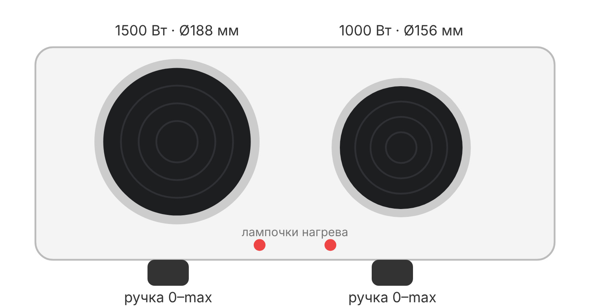

• Prego «Tupla keittolevy 1500W + 1000W», модель P-10488 (Malli: P-10488) • Производитель/импортёр: Inbound Oy, Финляндия (inbound.fi); продаётся, в частности, в Motonet (код 38-4414, «Keittolevy 2-levyä 2500 W») • Белый корпус, две чугунные конфорки («блины») • Гарантия для частного покупателя — 24 месяца (по Motonet)
• Большая конфорка — 1500 Вт, диаметр около 188 мм • Малая конфорка — 1000 Вт, диаметр около 156 мм • У каждой конфорки своя поворотная ручка-терморегулятор: 0 = выкл., дальше — нагрев от слабого до максимального [типично] • Индикаторные лампочки: горят, пока конфорка включена и греется; при работе термостата гаснут и снова загораются — это нормально [типично] • Термопредохранитель отключает плитку при перегреве • Резиновые/пластиковые ножки снизу [типично]
• Снимите всю упаковку и плёнки, протрите корпус влажной тряпкой [типично] • Включите обе конфорки на максимум без посуды на 3–5 минут, чтобы прокалить защитное покрытие блинов [типично] • Появится дым и запах — это нормально, проветрите помещение; при следующих включениях запах пропадает [типично] • Выключите и дайте остыть
• Поставьте плитку на ровную, твёрдую, термостойкую поверхность, вставьте вилку в заземлённую розетку 230 В • Посуда — с толстым ровным дном, по диаметру равная конфорке или чуть больше; кривое или маленькое дно греется плохо и перегревает блин [типично] • Ставьте посуду до включения или сразу после; не грейте пустую конфорку долго [типично] • Ручка: малые положения — подогрев и томление, средние — варка, максимум — закипание и жарка; после закипания убавляйте [типично] • Обе конфорки вместе берут 2500 Вт — не включайте в один удлинитель/розетку с другими мощными приборами • Конфорка остывает медленно: можно выключить за несколько минут до готовности и доварить остаточным теплом [типично] • После работы поверните обе ручки в 0 и выньте вилку из розетки
• Конфорки и корпус остаются горячими долго после выключения — не трогайте, не убирайте плитку, пока не остынет [типично] • Не оставляйте включённую плитку без присмотра, держите подальше от детей [типично] • Не ставьте на мягкое (скатерть, клеёнка, ковёр) и на пластик; рядом не должно быть занавесок, бумаги, полотенец [типично] • Оставляйте свободное место вокруг, не накрывайте плитку [типично] • Не погружайте в воду, не мойте под краном; шнур не должен касаться горячих конфорок [типично] • Повреждённый шнур или вилка — не пользоваться, ремонт только в сервисе [типично] • Не используйте с внешним таймером или пультом [типично]
• Чистите только выключенную и полностью остывшую плитку, вилка вынута [типично] • Корпус — влажной тряпкой с мягким средством, без абразивов [типично] • Чугунные блины держите сухими: протрите слегка влажной тряпкой и сразу вытрите насухо; можно коротко включить, чтобы просушить [типично] • Пригоревшее — мягкой щёткой/губкой, без металлических скребков [типично] • Против ржавчины: время от времени тонко смажьте тёплый (не горячий) блин растительным маслом или специальным средством для чугунных конфорок (в Финляндии — «keittolevyn hoitoaine») [типично] • Если появилась ржавчина — зачистите мягкой губкой, протрите, нанесите средство, коротко прогрейте [типично] • Храните в сухом месте
• Не греет, лампочка не горит — проверьте розетку, вилку, пробки/автомат; ручка не в 0? [типично] • Лампочка мигает/гаснет при работе — термостат держит температуру, это норма [типично] • Перестала греть совсем после перегрева — сработал термопредохранитель, нужен сервис [типично] • Дым и запах — при первом включении норма; позже — пригоревшая еда или масло на блине, почистите [типично] • Медленно греет — неровное или слишком маленькое дно посуды [типично] • Выбивает автомат — слишком много приборов на одной линии; при повторе прекратите пользоваться • Ржавые пятна на блинах — см. «Чистка и уход»
• Модель: P-10488 (Motonet 38-4414) • Питание: 220–240 В ~ 50 Гц [типично] • Мощность: 1500 Вт + 1000 Вт = 2500 Вт • Конфорки: чугунные, Ø 188 мм и Ø 156 мм • Регулировка: 2 поворотных терморегулятора • Индикаторы: лампочки включения • Защита: термопредохранитель • Цвет: белый • Упаковка (по Motonet): 245 × 170 × 160 мм, 1,455 кг (данные магазина, могут быть неточны) • Гарантия: 24 мес.